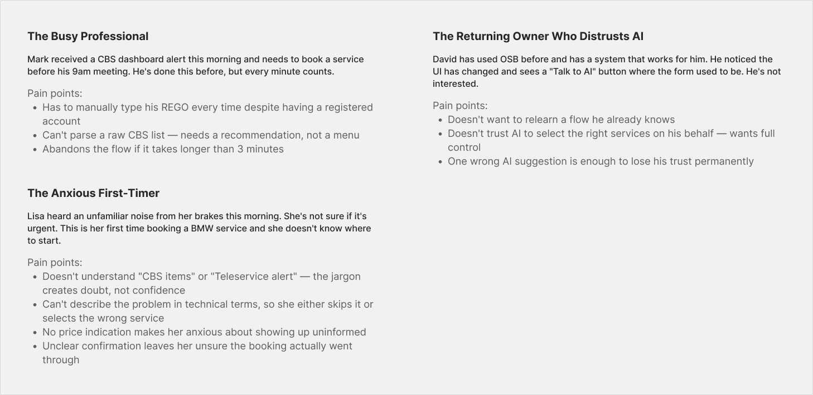
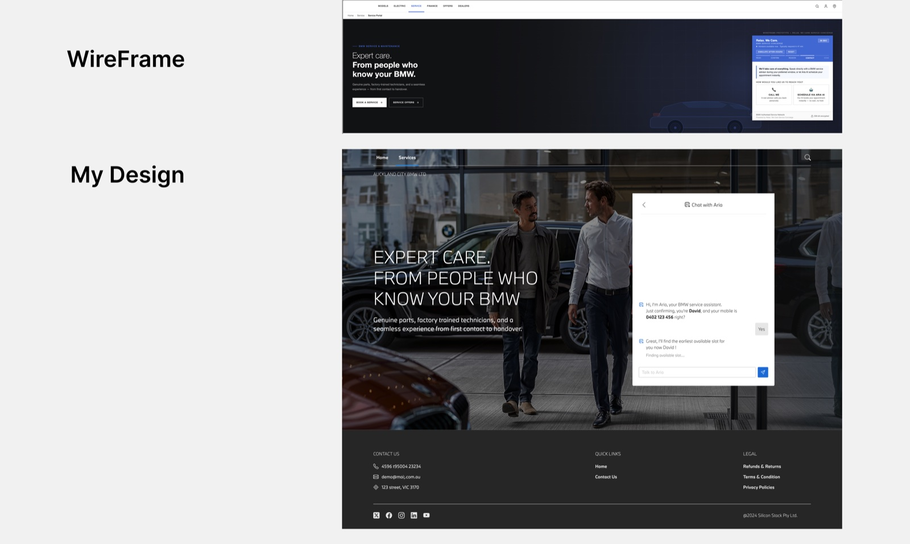
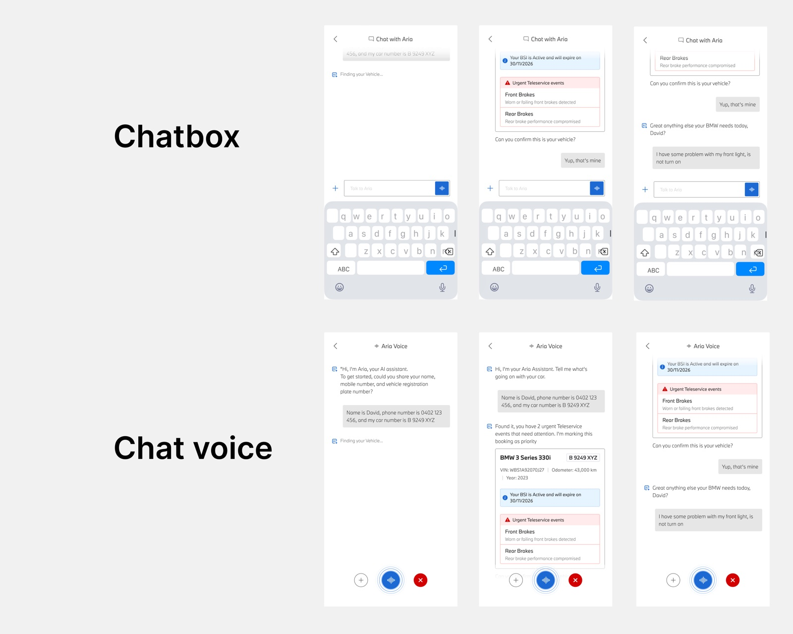

Automotive AI · Conversational UI
Putting AI where drivers actually need speed.
BMW engaged our team to redesign the Online Service Booking (OSB) interface from an internal wireframe and integrate CBS/Teleservice vehicle health data into SEAM dealership leads. Auditing the flow revealed a critical UX flaw: AI voice booking sat at the final confirmation step. I redesigned the visual UI and repositioned Aria AI as an optional multimodal fast entry from step one.

Moved conversational booking from final confirmation to an optional fast lane upfront.
Extends diagnostics beyond CBS/Teleservice to visible body, interior, or tyre wear.
Advisors receive structured service codes and photos before the vehicle arrives.
01 · Context
Connecting vehicle telemetry with human service booking.
BMW Online Service Booking (OSB) connects vehicle owners with dealership workshops. Under the hood, Condition Based Service (CBS) and Teleservice already detect urgent maintenance needs such as worn brakes or active service intervals.
The redesign brief covered visual modernization matching BMW's brand standards, an audit of booking behavior, and seamless data handoff into SEAM so dealership advisors receive high-quality, pre-diagnosed leads.
Desktop & Mobile Web
Aria (Chat, Voice, Photo)
CBS, Teleservice & SEAM
BMW Drivers & Advisors
02 · Problem
A brief solved for technicians, but mismatched for drivers.
Pulling CBS/Teleservice data into the booking flow solved half the puzzle for workshop advisors. Yet reviewing the client's wireframe exposed three customer-facing friction points.
AI placed at the final step
Introducing AI voice interaction at confirmation created a channel mismatch: users who already filled manual steps are committed and want instant submit, not a new chat.
High friction for urgent mobile users
Drivers noticing a warning light or strange noise on the go struggle with multi-step dropdown forms and unfamiliar technical service terminology.
Blind spots outside telemetry
CBS/Teleservice detects sensor faults well, but cannot capture physical damage, scuffed bodywork, interior wear, or visible tyre condition.
03 · My role
Visual redesign, AI UX critique, and multimodal UI craft.
Flow & Wireframe Audit
Evaluated BMW's internal wireframe across customer urgency scenarios and challenged the final-step AI placement with concrete behavioral rationale.
Conversational UI Design
Studied ChatGPT and Gemini chat/voice patterns to craft Aria's dialogue cards, urgent Teleservice banners, confirmation pills, and fallback states.
Brand-Faithful Visual UI
Designed responsive desktop and mobile booking screens matching BMW's crisp typography, clean white cards, and authoritative blue action hierarchy.
04 · Approach
Audit the wireframe, benchmark AI patterns, redesign the flow.
Rather than decorating the provided wireframe as-is, I examined where AI genuinely removes effort versus where it introduces cognitive overhead.
Wireframe Audit
Mapped technician wins vs driver friction in BMW's original 3-step wireframe.
Persona Mapping
Modeled hurried mobile drivers alongside methodical desktop planners.
AI Benchmark
Analyzed ChatGPT and Gemini turn-taking, voice triggers, and review cards.
Entry Reposition
Proposed Aria as a step-1 fast track while retaining step-3 brief compliance.
Userflow Spec
Mapped vehicle lookup, CBS translation, human review, and SEAM submission.
Responsive UI
Delivered desktop and mobile screens for manual, text, voice, and photo flows.


05 · AI Interaction & Multimodal UI
Repositioning AI without breaking the client brief.
The original wireframe mandated AI scheduling at the final step. Removing it outright risked brief pushback, while keeping it only at the end hurt usability. The solution introduced Aria cleanly at Step 1 for speed-focused users while retaining Aria Scheduling at Step 3 for manual-flow users.
| Dimension | Original Wireframe | Redesigned Dual-Entry UI |
|---|---|---|
| AI Entry Point | Forced at final confirmation step after manual form entry. | Optional 'Aria Assistant' fast lane right at Step 1, plus 'Aria Scheduling' at Step 3. |
| User Effort | Manual registration lookup plus dropdown service hunting. | Natural language input translated automatically into structured CBS service codes. |
| Urgent Telemetry | Hidden behind generic service categories. | Surfaced inline inside chat as high-contrast Urgent Teleservice event cards (e.g., Brakes). |
| Non-Sensor Issues | Free-text box easily overlooked or vague. | Direct in-chat photo upload capturing body damage, interior wear, or tyre issues. |
How Aria operates between driver and SEAM backend
1. Identify Vehicle
Driver shares registration plate and state via text or voice; Aria verifies car model, VIN, odometer, and active BSI package.
2. Translate to CBS
Natural language descriptions ('front light is not turning on') map cleanly to structured service codes alongside urgent Teleservice alerts.
3. Human Review & Submit
Drivers confirm vehicle identity and review detected items before Aria sends a structured lead straight into dealership SEAM.


06 · Key solutions
Translating AI logic into calm, BMW-grade UI.
1. Crisp BMW desktop experience with embedded Aria chatbox.
Starting from BMW's clean editorial website aesthetic, the booking container pairs structured dealership context with an uncluttered conversational panel.
Visual restraint matters in automotive service: high-contrast typography, generous whitespace, and BMW's signature action blue keep urgent maintenance alerts clear without causing panic.

2. First-step fast entry paired with brief-aligned final step.
At Step 1 ('Select Your Car'), drivers can either type their license plate manually or launch 'Aria Assistant' immediately, skipping dropdowns altogether.
At Step 3 ('Contact Detail'), drivers who completed the manual flow see an informational Teleservice notice and can still let 'Aria Scheduling' book the earliest slot, preserving full alignment with the client's brief.

3. Multimodal chat, hands-free voice, and photo diagnostics.
Both desktop and mobile support seamless switching between text chat and Aria Voice, letting drivers type quietly at a desk or speak hands-free next to their vehicle.
In-chat photo upload bridges the physical-digital gap: customers snap visible scratches, tyre wear, or interior damage directly inside the thread, attaching visual proof straight to the SEAM advisor lead.

07 · Trade-offs
Balancing client mandates with driver ergonomics.
Instead of deleting the client's mandated Step 3 AI trigger, keeping it secondary while elevating Step 1 resolved user friction without fighting stakeholder requirements.
Pure conversational bubbles hide critical vehicle data. Embedding structured UI cards (VIN, BSI expiry, Urgent Teleservice alerts) inside chat kept confirmation scannable and error-free.
Adding photo upload introduced an extra input state in chat, but prevented advisors from being blindsided by non-sensor wear at vehicle drop-off.
08 · Outcome
A practical AI booking pattern ready for dealership integration.
- Delivered full desktop and mobile UI redesign aligned with BMW's visual guidelines.
- Reframed AI from a late-stage novelty into an optional multimodal accelerator (text, voice, photo) grounded in real CBS/Teleservice data.
- Defined clean conversational fallback and confirmation states ensuring structured, accurate leads reach SEAM advisors.
Concept and UI design deliverable completed with SiliconStack design leadership for BMW stakeholder walkthroughs.
09 · Reflection
What I learned.
AI only helps when placed at the right moment.
Adding conversational UI does not automatically improve UX. The real design craft is identifying where AI removes genuine friction versus where it adds unnecessary turns.
Designers must understand backend data dependencies.
Mapping how CBS, Teleservice, and SEAM assemble a response pushed my thinking beyond surface visuals into structured data, edge states, and human verification.
Solve the underlying problem, not just the wireframe.
Working from a client wireframe taught me to honor stakeholder intent while advocating clearly for the end user's real-world context.
Pentana Reporting: One dynamic report screen built to serve every workbench.